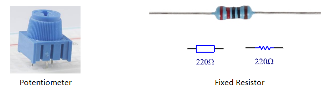
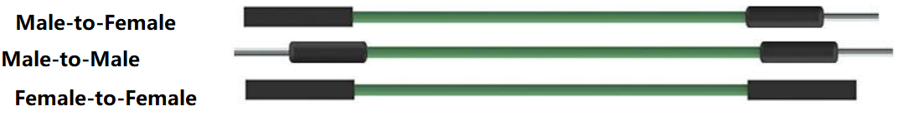
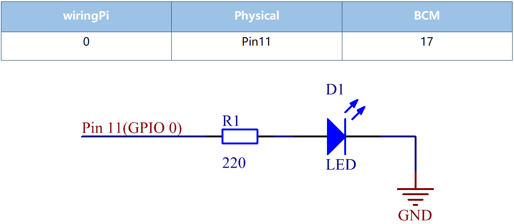
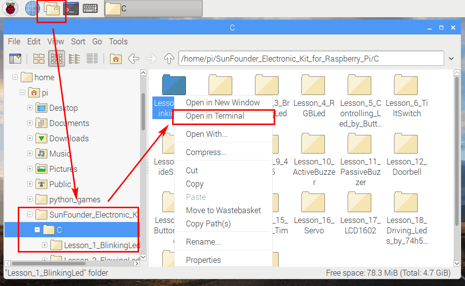
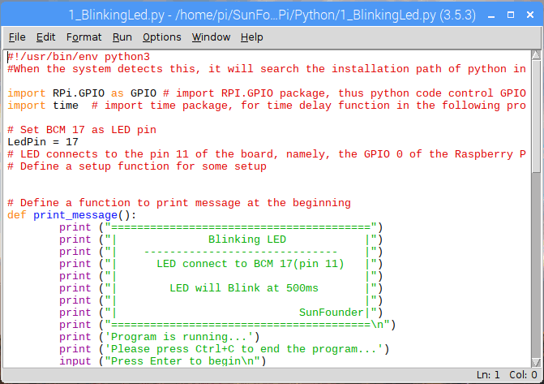
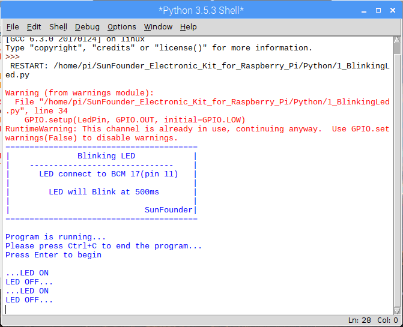

Lesson 1 Blinking LED¶
Introduction¶
In this lesson, with Raspberry Pi, we will learn how to make a blinking LED by programming. By the way, you can get many interesting phenomena by applying LED. Now get to start and you will enjoy the fun of DIY at once!
Components¶
Note
This table gives the necessary product components of all lessons.
In the following lessons, if there is no newly added component, the table will not appear again; instead, the list of newly added components will present for you.

Principle¶
Breadboard
A breadboard is a construction base for prototyping of electronics. It is used to build and test circuits quickly before finishing any circuit design. And it has many holes into which components mentioned above can be inserted like ICs and resistors as well as jumper wires. The breadboard allows you to plug in and remove components easily.
The picture shows the internal structure of a half+ breadboard. Although these holes on the breadboard appear to be independent of each other, they are actually connected to each other through metal strips internally.

Resistor
Resistor is an electronic element that can limit the branch current. A fixed resistor is a kind of resistor whose resistance cannot be changed, while that of a potentiometer or a variable resistor can be adjusted.
Fixed resistor is applied in this kit. In the circuit, it is essential to protect the connected components. The following pictures show a real object, 220Ω resistor and two generally used circuit symbols of resistor. Ω is the unit of resistance and the larger units include KΩ, MΩ, etc. Their relationship can be shown as follows: 1 MΩ=1000 KΩ, 1 KΩ = 1000 Ω, which means 1 MΩ = 1000,000 Ω = 10^6 Ω.
Normally, the resistance can be marked directly, in color code, and by character. The resistors offered in this kit are marked by different colors. Namely, the bands on the resistor indicate the resistance.
When using a resistor, we need to know its resistance first. Here are two methods: you can observe the bands on the resistor, or use a multimeter to measure the resistance. You are recommended to use the first method as it is more convenient and faster.
As shown in the card, each color stands for a number.

LED
Semiconductor light-emitting diode is a type of component which can turn electric energy into light energy via PN junctions. In terms of wavelength, it can be categorized into laser diode, infrared light-emitting diode and visible light-emitting diode, known as light-emitting diode (LED).

Diode has unidirectional conductivity, so the current flow will be as the arrow indicates in figure circuit symbol. You can only provide the anode with a positive power and the cathode with a negative one. Thus the LED will light up.
An LED has two pins. The longer one is anode, and the shorter one, cathode. Pay attention not to connect them inversely. There is fixed forward voltage drop in the LED, so it cannot be connected with the circuit directly because the supply voltage can outweigh this drop and cause the LED to be burnt. The forward voltage of the red, yellow, and green LED is 1.8 V and that of the white one is 2.6 V. Most LEDs can withstand a maximum current of 20 mA, so we need to connect a current limiting resistor in series.
The formula of the resistance value is as follows:
R = (Vsupply – VD)/I
R stands for the resistance value of the current limiting resistor, Vsupply for voltage supply, VD for voltage drop and I for the working current of the LED.
If we provide 5 Volt for the red LED, the minimum resistance of the current limiting resistor should be: (5V-1.8V)/20mA = 160Ω. Therefore, you need a 160Ωor larger resistor to protect the LED. You are recommended to use the 220Ω resistor offered in the kit.
Jumper Wires
Wires that connect two terminals are called jumper wires. There are various kinds of jumper wires. Here we focus on those used in breadboard. Especially, they are used to transfer electrical signals from anywhere on the breadboard to the input/output pins of a microcontroller.
Jump wires are fitted by inserting their “end connectors” into the slots provided in the breadboard, beneath whose surface there are a few sets of parallel plates that connect the slots in groups of rows or columns depending on the area. The “end connectors” are inserted into the breadboard, without soldering, in the particular slots that need to be connected in the specific prototype.
There are three types of jumper wire: Female-to-Female, Male-to-Male, and Male-to-Female.
More than one type of them may be used in a project. The color of the jump wires is different but it doesn’t mean their function is different accordingly; it’s just designed as this way to better identify the connection between each circuit.
Schematic Diagram¶
In this experiment, connect a 220Ω resistor to the anode (the long pin of the LED), then the resistor to Pin11 of Raspberry Pi, and connect the cathode (the short pin) of the LED to GND. Therefore, to turn on a LED, we need to make pin11 high level. We can get this phenomenon by programming.
Note: Pin11 refers to the 11th pin of the Raspberry Pi from left to right, and its corresponding wiringPi and BCM pin numbers are shown in the following table.
In the C language related content, we make GPIO 0 equivalent to 0 in the wiringPi. Among the Python language related content, BCM 17 is 17 in the BCM column of the following table. At the same time, they are the same as the 11th pin on the Raspberry Pi Physical, Pin 11.

{kind=link}
{kind=link}
{kind=link}
{kind=link}
For C Language Users:¶
Command¶
1. Go to the folder of the code.
If you use a monitor, you’re recommended to take the following steps.
Go to /home/pi/ and find the folder electronic-kitfor-raspberry-pi.
Find c in the folder, right-click on it and select Open in Terminal.
{kind=link}
Then a window will pop up as shown below. So now you’ve entered the path of the code 1_BlinkingLed.c

In the following lessons, we will use command to enter the code file instead of right-clicking. But you can choose the method you prefer.
If you log into the Raspberry Pi remotely, use “cd” to change directory:
cd /home/pi/electronic-kit/for-raspberry-pi/c/Lesson_1_BlinkingLed
Note
Change directory to the path of the code via cd in this experiment.
{kind=link}
In either way, now you are in the folder Lesson_1_BlinkingLed. The subsequent procedures based on these two methods are the same. Let’s move on.
2. Compile the code.
gcc 1_BlinkingLed.c -o BlinkingLed -lwiringPi
Note
gcc is GNU Compiler Collection. Here, its functions like compiling the C language file 1_BlinkingLed.c and outputting an executable file. In the command, -o means outputting (the character immediatelyfollowing -o is the filename output after compilation, and an executable named BlinkingLed will generate here) and -lwiringPi is to load the library wiringPi (l is the abbreviation of library).
{kind=link}
3. Run the executable file output in the previous step:
sudo ./BlinkingLed
Note
To control the GPIO, you need to run the program by the command, sudo(superuser do). The command “./” indicates the current directory. The whole command is to run the BlinkingLed in the current directory.
{kind=link}
As the code runs, you will see the LED blinking. You can press Ctrl + C to stop running the current code.
4. If you want to edit the code file 1_BlinkingLed.c, type the following command to open 1_BlinkingLed.c .
nano 1_BlinkingLed.c
Note
nano is a text editor tool. The command is used to open the code file 1_BlinkingLed.c by this tool.
Code¶
The program code is shown as follows:
1.#include <wiringPi.h>
2.#include <stdio.h>
3.#define LedPin 0
4.
5.int main(void)
6.{
7. // When initialize wiring failed, print message to screen
8. if(wiringPiSetup() == -1){
9. printf("setup wiringPi failed !");
10. return 1;
11. }
12.
13. pinMode(LedPin, OUTPUT);
14.
15. while(1){
16. // LED off
17. digitalWrite(LedPin, LOW);
18. printf("...LED off\n");
19. delay(500);
20. // LED on
21. digitalWrite(LedPin, HIGH);
22. printf("LED on...\n");
23. delay(500);
24. }
25.
26. return 0;
27.}
Code Explanation¶
1. #include <wiringPi.h>
The hardware drive library is designed for the C language of Raspberry Pi. Adding this library is conducive to the initialization of hardware,and the output of I/O ports, PWM, etc.
2. #include <stdio.h>
Standard I/O library. The printf function used for printing the data displayed on the screen is realized by this library. There are many other performance functions for you to explore.
3. #define LedPin 0
Assign GPIO 0 to LedPin that represents GPIO 0 in the code later.
8. if (wiringPiSetup() == -1){
9. printf("setup wiringPi failed !");
10. return 1;
This initializes wiringPi library and assumes that the calling program is going to be using the wiringPi pin numbering scheme. This function needs to be called with root privileges. When initialize wiring failed, print message to screen.
13. pinMode(LedPin, OUTPUT);
This sets the mode of a pin to either INPUT, OUTPUT, PWM_OUTPUT or GPIO_CLOCK. Note that only wiringPi pin 1 (BCM_GPIO 18) supports hardware PWM output, you can also set other pins to PWM output using the softPWM library. Only wiringPi pin 7 (BCM_GPIO 4) supports CLOCK output modes. Here we set LedPin as OUTPUT mode to write value to it.
17. digitalWrite(LedPin, LOW);
Writes the value HIGH or LOW (1 or 0) to the given pin which must have been previously set as OUTPUT. On Raspberry Pi, when the output voltage is less than 0.4V, by default, it is low level, LOW, and when the voltage is greater than 2.4V, it is high level, HIGH. Since the anode of LED is connected to GPIO 0, thus the LED will light up if GPIO 0 is set high. On the contrary, set GPIO 0 as low level, digitalWrite (LedPin, LOW), LED will go out.
18. printf("...LED off\n");
The printf function is a standard library function and its function prototype is in the header file “stdio.h”. The general form of the call is: printf(“format control string”, output table columns). The format control string is used to specify the output format, which is divided into format string and non-format string. The format string starts with “%” followed by format characters such as “%d”for decimal integer output. Non-format strings are printed as prototypes. What is used here is a non-format string, followed by “n” that is a newline character, representing automatic line wrapping after printing a string.
19. delay(500);
This is a function that suspends the program for a period of time. And the speed of the program is determined by our hardware. Here we turn on or off the LED. If there is no delay function, the program will run the whole program very fast and continuously loop and we can hardly observe the phenomenon. So we need the delay function to help us write and debug the program. delay (500) keeps the current HIGH or LOW state for 500ms(0.5s).
26. **return** 0;
Usually, it is placed in the last position of the main function, indicating that the function returns 0 after executing the function.
For Python Language Users¶
If you use a monitor, you’re recommended to take the following steps.
Find 1_BlinkingLed.py and double click it to open the file.
{kind=link}
Click Run ->Run Module in the window and the following contents will appear.
{kind=link}
To stop it from running, just click the X button on the top right corner to close it and then you’ll back to the code. If you modify the code, before clicking Run Module (F5) you need to save it first. Then you can see the results.
If you log into the Raspberry Pi remotely, type in the command:
cd /home/pi/electronic-kit/for-raspberry-pi/python
Note
Change directory to the path of the code via cd in this experiment.

2. Run the code.
sudo python3 1_BlinkingLed.py
Note
Here, sudo means superuser do, and the command python3 means to run the file by the programming language, Python 3.0.
{kind=link}
As the code runs, you will see the LED blinking. You can press Ctrl+C to stop running the current code.
3. If you want to edit the code file 1_BlinkingLed.c, type the following command to open 1_BlinkingLed.c
nano 1_BlinkingLed.py
Note
nano is a text editor tool. The command is used to open thecode file 1_BlinkingLed.c by this tool.

Code¶
The following is the program code:
1.import RPi.GPIO as GPIO
2.import time
3.
4.# Set BCM 17 as LED pin
5.LedPin = 17
6.
7.# Define a setup function for some setup
8.def setup():
9. GPIO.setmode(GPIO.BCM)
10. GPIO.setup(LedPin, GPIO.OUT, initial=GPIO.LOW)
11.
12.# Define a main function for main process
13.def main():
14. while True:
15. print ('...LED ON')
16. # Turn on LED
17. GPIO.output(LedPin, GPIO.HIGH)
18. time.sleep(0.5)
19. print ('LED OFF...')
20. # Turn off LED
21. GPIO.output(LedPin, GPIO.LOW)
22. time.sleep(0.5)
23.
24.# Define a destroy function for clean up everything after the script finished
25.def destroy():
26. # Turn off LED
27. GPIO.output(LedPin, GPIO.LOW)
28. # Release resource
29. GPIO.cleanup()
30.
31.# If run this script directly, do:
32.if __name__ == '__main__':
33. setup()
34. try:
35. main()
36. # When 'Ctrl+C' is pressed, the child program
37. # destroy() will be executed.
38. except KeyboardInterrupt:
39. destroy()
Code Explanation¶
1.import RPi.GPIO as GPIO
In this way, import the RPi.GPIO library, then define a variable, GPIO to replace RPI.GPIO in the following code.
2.import time
Import time library to help use delay function in the following program.
5.LedPin = 17
LED connects to the pin 11 of the board, namely, the BCM 17 of the Raspberry Pi.
9. GPIO.setmode(GPIO.BCM)
There are two ways of numbering the I/O pins on a Raspberry Pi within RPi.GPIO: BOARD numbers and BCM numbers. In our lessons, what we use is BCM numbering method.
10. GPIO.setup(LedPin, GPIO.OUT, initial=GPIO.LOW)
You need to set up every channel you use as input mode or output mode. Here we set the mode of LedPin to GPIO.OUT, and initial level to LOW( 0v ).
17. GPIO.output(LedPin, GPIO.HIGH)
Set LedPin to output high level to light up LED.
18. time.sleep(0.5)
Delay for 0.5 second. Here, the statement is similar to delay function in C language, the unit is second.
32.if __name__ == '__main__':
33. setup()
34. try:
35. main()
36. # When 'Ctrl+C' is pressed, the program
37. # destroy() will be executed.
38. except KeyboardInterrupt:
39. destroy()
This is the general running structure of the code. When the program starts to run, it initializes the pin by running the setup(), and then runs the code in the main() function to set the pin to high and low levels. When ‘Ctrl+C’ is pressed, the program, destroy() will be executed.
{kind=link}